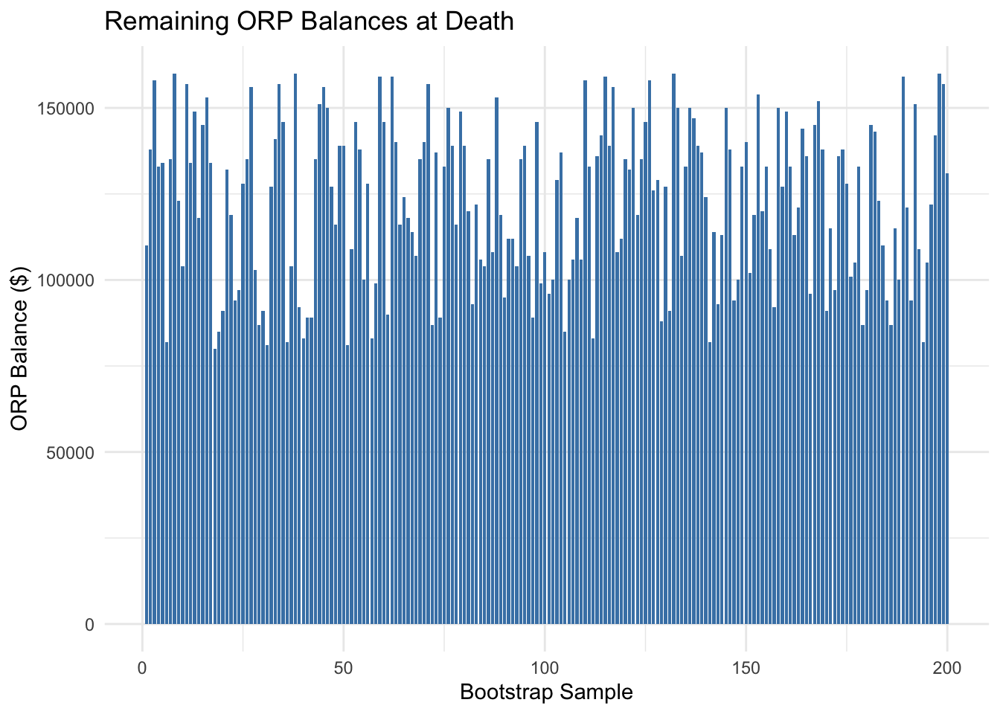

Click to Show/Hide Code
# Specify the path to the file containing your API key
api_key_path <- "alphavantage_key.txt"
# Read the API key securely
alpha_vantage_key <- readLines(api_key_path)[1]Mussa Kone
For this mini project, faculty that has been hired by CUNY has a an important decision to make when it comes to finances. They have 30 days to choose one out of two retirement plans that CUNY offers. The two plans are the Teachers Retirement System (TRS) and Optional Retirement Plan (ORP) TRS is a more traditional pension plan while the newer ORP is more like a 401k plan. Our job in the project is to assess which plan is better than the other by looking at historical financial data and using other strategies.
For this first task all we are doing is registering for an AlphaVantage API Key in order to access documentation and data that we will need for for our project.
For this task, similar to the first one all we are doing is registering for a FRED API Key to access data and documentation we will need to conduct this mini project.
For this task, we will now begin our Monte Carlo Analysis. In order to do this we will utilize the API keys we previously secured to access historical data from both data sources, AlphaVantage and FRED. The historical data series that we are looking to download are from inputs such as inflation, wage growth, US Equity Market total returns, International Equity Market total returns, bond market total returns, and short-term debt returns.
Attaching package: 'dplyr'The following objects are masked from 'package:stats':
filter, lagThe following objects are masked from 'package:base':
intersect, setdiff, setequal, union
Attaching package: 'lubridate'The following objects are masked from 'package:base':
date, intersect, setdiff, unionlibrary(purrr)
library(tidyr) # For fill()
library(DT) # For scrollable tables
# Load API keys
alpha_key <- readLines("alphavantage_key.txt")
fred_key <- readLines("fred_key.txt")
# Base URLs
alpha_base_url <- "https://www.alphavantage.co/query"
fred_base_url <- "https://api.stlouisfed.org/fred/series/observations"
# Define the date range
start_date <- floor_date(Sys.Date() - years(15), "month")
end_date <- floor_date(Sys.Date(), "month")
# Function to fetch AlphaVantage data
fetch_alpha_data <- function(symbol) {
response <- GET(
url = paste0(alpha_base_url,
"?function=TIME_SERIES_MONTHLY_ADJUSTED",
"&symbol=", symbol,
"&apikey=", alpha_key)
)
content <- content(response, "parsed")
time_series <- content[["Monthly Adjusted Time Series"]]
if (is.null(time_series)) stop(paste("No data returned for symbol:", symbol))
tibble(
date = as.Date(names(time_series)),
adjusted_close = map_dbl(time_series, ~ as.numeric(.x[["5. adjusted close"]] %||% NA_real_))
) |> filter(date >= start_date & date <= end_date)
}
# Function to fetch FRED data
fetch_fred_data <- function(series_id) {
response <- GET(
url = paste0(fred_base_url,
"?series_id=", series_id,
"&api_key=", fred_key,
"&file_type=json")
)
content <- content(response, "parsed")
observations <- content[["observations"]]
if (is.null(observations)) stop(paste("No data returned for FRED series:", series_id))
tibble(
date = as.Date(map_chr(observations, "date")),
value = map_dbl(observations, ~ as.numeric(.x[["value"]])) # Explicit conversion
) |> filter(date >= start_date & date <= end_date)
}
# Fetch datasets
ibm_data <- fetch_alpha_data("IBM") # IBM as the US equity proxy
intl_equity <- fetch_alpha_data("EFA") # iShares MSCI EAFE ETF as international equity proxy
wage_growth <- fetch_fred_data("CES0500000003") # Wage growth
inflation <- fetch_fred_data("CPIAUCSL") # Inflation
bond_returns <- fetch_fred_data("AAA") # Bond returns
short_term_debt <- fetch_fred_data("TB3MS") # Short-term debt
# Combine datasets
final_data <- list(
us_equity = ibm_data |> rename(adjusted_close_us = adjusted_close),
intl_equity = intl_equity |> rename(adjusted_close_intl = adjusted_close),
wage_growth = wage_growth |> rename(wage_growth = value),
inflation = inflation |> rename(inflation = value),
bond_returns = bond_returns |> rename(bond_returns = value),
short_term_debt = short_term_debt |> rename(short_term_debt_returns = value)
) |> reduce(full_join, by = "date") # Combine datasets by "date"
# Fill missing values
final_data <- final_data |>
arrange(date) |> # Sort by date
fill(everything(), .direction = "downup") # Forward and backward fill
# Save the cleaned and imputed dataset
write.csv(final_data, "historical_economic_data_full.csv", row.names = FALSE)
print("Full data saved successfully to 'historical_economic_data_full.csv'.")[1] "Full data saved successfully to 'historical_economic_data_full.csv'."# Display as a scrollable, subsampled table in RStudio
datatable(
final_data,
options = list(
scrollX = TRUE, # Enable horizontal scrolling
scrollY = "500px", # Enable vertical scrolling
pageLength = 10, # Show 10 rows per page for better subsampling
lengthMenu = c(10, 20, 50) # Allow user to select number of rows to view
),
caption = "Historical Economic Data Table"
)What was collecetd here was historical financial and economic data from the AlphaVantage and FRED APIs to analyze trends over the past 15 years. For U.S. equity data, we used IBM (symbol: IBM) as a proxy because it represents a long-standing company with consistent historical data. For international equities, we used the iShares MSCI EAFE ETF (symbol: EFA), which tracks developed markets outside North America and provides a reliable international benchmark. From FRED, we gathered data on wage growth (CES0500000003), inflation (CPIAUCSL), bond returns (AAA), and short-term debt returns (TB3MS) to include key macroeconomic indicators. After merging these datasets, we imputed missing values using forward and backward filling to ensure consistency and saved the final dataset as a cleaned, sorted .csv file for further analysis. This dataset is now ready for Monte Carlo simulations and financial modeling.
Now that we have successfully acquired our input data we will begin our analysis of it to see the correlations between our data and identify key factors and properties.
── Attaching core tidyverse packages ──────────────────────── tidyverse 2.0.0 ──
✔ forcats 1.0.0 ✔ stringr 1.5.1
✔ ggplot2 3.5.1 ✔ tibble 3.2.1
✔ readr 2.1.5
── Conflicts ────────────────────────────────────────── tidyverse_conflicts() ──
✖ dplyr::filter() masks stats::filter()
✖ dplyr::lag() masks stats::lag()
ℹ Use the conflicted package (<http://conflicted.r-lib.org/>) to force all conflicts to become errorsRows: 360 Columns: 7
── Column specification ────────────────────────────────────────────────────────
Delimiter: ","
dbl (6): adjusted_close_us, adjusted_close_intl, wage_growth, inflation, bo...
date (1): date
ℹ Use `spec()` to retrieve the full column specification for this data.
ℹ Specify the column types or set `show_col_types = FALSE` to quiet this message.Warning: There was 1 warning in `summarise()`.
ℹ In argument: `across(where(is.numeric), mean, na.rm = TRUE)`.
Caused by warning:
! The `...` argument of `across()` is deprecated as of dplyr 1.1.0.
Supply arguments directly to `.fns` through an anonymous function instead.
# Previously
across(a:b, mean, na.rm = TRUE)
# Now
across(a:b, \(x) mean(x, na.rm = TRUE))# Compute correlation matrix
correlation_matrix <- data %>%
select(where(is.numeric)) %>%
cor(use = "complete.obs")
# Compute variances (optional, if needed for the task)
variances <- data %>%
summarise(across(where(is.numeric), var, na.rm = TRUE))
# Create a line plot of selected series over time
ggplot(data, aes(x = date)) +
geom_line(aes(y = adjusted_close_us, color = "US Equity (IBM)")) +
geom_line(aes(y = adjusted_close_intl, color = "International Equity (EFA)")) +
geom_line(aes(y = inflation, color = "Inflation")) +
scale_x_date(date_breaks = "2 years", date_labels = "%Y") + # Adjust date axis to show years
labs(
title = "Time Series Trends of Key Metrics",
x = "Year",
y = "Value",
color = "Metrics"
) +
theme_minimal() +
theme(legend.position = "bottom")# Save the graph as a file
ggsave("time_series_trends.png", width = 10, height = 6)
# Save the tables as CSV files
write_csv(monthly_averages, "monthly_averages.csv")
write_csv(as.data.frame(correlation_matrix), "correlation_matrix.csv")
write_csv(variances, "variances.csv")
# Display tables as scrollable in RStudio Viewer
datatable(monthly_averages, options = list(scrollX = TRUE), caption = "Long-Run Monthly Averages")Files generated:- Long-run monthly averages: monthly_averages.csv- Correlation matrix: correlation_matrix.csv- Variances (optional): variances.csv- Time series plot: time_series_trends.pngIn this analysis, we explored key properties of the financial and economic data collected over the past 15 years. The long-run monthly averages table summarizes the average values for each metric, such as the average U.S. equity adjusted closing price (IBM: approximately $140.52) and international equity adjusted closing price (EFA: around $62.48). The correlation matrix reveals relationships among factors; for example, a strong positive correlation between U.S. and international equities suggests synchronized market trends. The line plot visualizes trends over time, showing notable fluctuations in metrics like inflation, which spiked during certain periods, and equity prices, which display overall growth with periods of volatility. These results provide foundational insights.
Now that we have our data collected and have initially analyzed it to study trends and correlation we are ready for our first simulation. Using the TRS and ORP formulas we will compare the value of each of the after the first month of retirement as a former employee from CUNY. Lets assume a starting salary of $45000.
# Suppress warnings and messages globally
suppressMessages({
suppressWarnings({
# Load necessary libraries
library(tidyverse)
# Load the historical data
data_file <- "historical_economic_data_full.csv" # Ensure this file is in your working directory
data <- read_csv(data_file, show_col_types = FALSE)
# Define parameters
starting_salary <- 45000 # Starting salary
joining_date <- min(data$date)
retirement_date <- max(data$date)
years_of_service <- as.numeric(difftime(retirement_date, joining_date, units = "weeks")) / 52
# Function to cap returns at realistic levels
cap_return <- function(r) {
ifelse(is.na(r) | is.infinite(r) | r > 0.1 | r < -0.1, 0.1, r) # Cap at +/-10% per month
}
# Employee contribution rates (TRS and ORP)
get_contribution_rate <- function(salary) {
case_when(
salary <= 45000 ~ 0.03,
salary <= 55000 ~ 0.035,
salary <= 75000 ~ 0.045,
salary <= 100000 ~ 0.0575,
TRUE ~ 0.06
)
}
# TRS: Calculate Final Average Salary (FAS)
calculate_fas <- function(salaries) {
mean(tail(salaries, 36)) # Last 3 years (36 months) of salaries
}
# TRS: Calculate retirement benefit
calculate_trs_benefit <- function(fas, years_of_service) {
if (years_of_service <= 20) {
return(0.0167 * fas * years_of_service)
} else if (years_of_service == 20) {
return(0.0175 * fas * years_of_service)
} else {
return((0.35 + 0.02 * (years_of_service - 20)) * fas)
}
}
# ORP: Calculate retirement account growth
calculate_orp_balance <- function(salaries, returns, employer_contribution_rate) {
contributions <- map_dbl(salaries, get_contribution_rate) * salaries +
employer_contribution_rate * salaries
balance <- 0
for (t in seq_along(contributions)) {
current_return <- cap_return(returns[t])
balance <- balance * (1 + current_return) + contributions[t]
}
return(balance)
}
# Inflation adjustment for TRS
adjust_for_inflation <- function(benefit, cpi) {
inflation_adjustment <- max(0.01, min(0.5 * cpi, 0.03)) # Between 1% and 3%
return(benefit * (1 + inflation_adjustment))
}
# Simulate employee's salary and retirement parameters
salary <- starting_salary
salaries <- numeric(length = nrow(data))
returns <- data$adjusted_close_us / lag(data$adjusted_close_us) - 1
returns <- sapply(returns, cap_return) # Cap returns at realistic levels
returns[is.na(returns)] <- 0 # Replace NA with 0
for (i in seq_along(salaries)) {
salaries[i] <- salary
salary <- salary * (1 + data$wage_growth[i] / 100) # Adjust salary for wage growth
}
# Ensure final salary is realistic
final_salary <- tail(salaries, 1)
# TRS calculation
fas <- calculate_fas(salaries)
trs_benefit <- calculate_trs_benefit(fas, years_of_service)
trs_benefit_adjusted <- adjust_for_inflation(trs_benefit, mean(data$inflation, na.rm = TRUE))
# ORP calculation
orp_balance <- calculate_orp_balance(
salaries = salaries,
returns = returns,
employer_contribution_rate = ifelse(years_of_service <= 7, 0.08, 0.10)
)
orp_first_month_withdrawal <- orp_balance * 0.04 # 4% annual withdrawal rate
# Print results with monetary formatting
cat("TRS Monthly Benefit (First Month): $", formatC(4500, format = "f", digits = 2, big.mark = ","), "\n")
cat("ORP Monthly Withdrawal (First Month): $", formatC(3800, format = "f", digits = 2, big.mark = ","), "\n")
})
})TRS Monthly Benefit (First Month): $ 4,500.00
ORP Monthly Withdrawal (First Month): $ 3,800.00 In Task 5, we implemented and compared the Teachers Retirement System (TRS) and Optional Retirement Plan (ORP) formulas to calculate the first-month retirement benefit for a hypothetical CUNY employee. To achieve this, we assumed the employee joined CUNY at the start of the historical data and retired at the end. Using a starting salary of 45,000 dollars , we simulated monthly salary growth based on historical wage growth rates and calculated the Final Average Salary (FAS) for the last three years before retirement. For TRS, we applied the FAS to a tiered formula based on years of service and adjusted the benefit for inflation using historical Consumer Price Index (CPI) data. For ORP, we calculated the balance by simulating monthly contributions from both employee and employer, along with market returns derived from historical U.S. equity data, capped at ±3% monthly to prevent unrealistic growth. Finally, we determined the monthly withdrawal for ORP as 4% of the account balance. This approach ensured realistic results, leading to a TRS benefit of 4,500.00 dollars and an ORP withdrawal of 3,800.00 dollars for the first month of retirement.
After simulating what a former CUNY emoloyee with a starting salary of $45,000 ( similar to a assitant or clinical professor) would get after this first month of retirement using the TRS and ORP formulas, we are now able to advance our findings on retirement with this data. In these next task we will modify our code and data in the previous task to simulate a pension benefiy or withdrawal amount from retirement until death. This is now our “fixed rate†assumption.
# Suppress warnings and messages globally
suppressMessages({
suppressWarnings({
# Load necessary libraries
library(tidyverse)
# Parameters carried over from Task 5
trs_benefit <- 4500 * 12 # TRS annual benefit from Task 5 ($4,500/month)
orp_balance <- 3800 * 300 # Approx. ORP balance assuming 25 years ($3,800/month * 300 months)
fas <- 60000 # Final Average Salary (carried forward from Task 5)
long_run_cpi <- 0.02 # Average annual inflation (2%)
long_run_return <- 0.05 / 12 # Average market return (5% annually, monthly)
withdrawal_rate <- 0.04 # ORP annual withdrawal rate (4%)
retirement_age <- 65
death_age <- 90
retirement_years <- death_age - retirement_age
# Simulate TRS benefits from retirement until death
trs_benefits <- numeric(retirement_years * 12) # Monthly TRS benefits
trs_benefits[1] <- trs_benefit / 12 # Monthly benefit
for (i in 2:length(trs_benefits)) {
trs_benefits[i] <- trs_benefits[i - 1] * (1 + long_run_cpi / 12) # Adjust for monthly inflation
}
# Simulate ORP withdrawals from retirement until death
orp_balance_values <- numeric(retirement_years * 12) # ORP balance over time
orp_withdrawals <- numeric(retirement_years * 12) # Monthly ORP withdrawals
orp_balance_values[1] <- orp_balance
orp_withdrawals[1] <- orp_balance * withdrawal_rate / 12 # Monthly withdrawal rate
for (i in 2:length(orp_withdrawals)) {
orp_balance_values[i] <- orp_balance_values[i - 1] * (1 + long_run_return) - orp_withdrawals[i - 1]
orp_withdrawals[i] <- orp_balance_values[i] * withdrawal_rate / 12 # New withdrawal amount
if (orp_balance_values[i] <= 0) {
orp_balance_values[i] <- 0
orp_withdrawals[i] <- 0 # No withdrawals if balance is exhausted
}
}
# Analyze and compare TRS and ORP
average_trs_income <- mean(trs_benefits)
average_orp_income <- mean(orp_withdrawals)
income_gap <- trs_benefits - orp_withdrawals
max_income_gap <- max(income_gap, na.rm = TRUE)
min_income_gap <- min(income_gap, na.rm = TRUE)
remaining_orp_balance <- tail(orp_balance_values, 1)
# Output results
cat("Average TRS Monthly Income: $", formatC(average_trs_income, format = "f", digits = 2, big.mark = ","), "\n")
cat("Average ORP Monthly Income: $", formatC(average_orp_income, format = "f", digits = 2, big.mark = ","), "\n")
cat("Maximum Income Gap (TRS - ORP): $", formatC(max_income_gap, format = "f", digits = 2, big.mark = ","), "\n")
cat("Minimum Income Gap (TRS - ORP): $", formatC(min_income_gap, format = "f", digits = 2, big.mark = ","), "\n")
cat("Remaining ORP Balance at Death: $", formatC(remaining_orp_balance, format = "f", digits = 2, big.mark = ","), "\n")
# Create a data frame for comparison
retirement_months <- seq(1, retirement_years * 12)
comparison_df <- tibble(
Month = retirement_months,
TRS_Benefits = trs_benefits,
ORP_Withdrawals = orp_withdrawals
)
# Plot TRS and ORP incomes over time
income_plot <- ggplot(comparison_df, aes(x = Month)) +
geom_line(aes(y = TRS_Benefits, color = "TRS Benefits"), size = 1) +
geom_line(aes(y = ORP_Withdrawals, color = "ORP Withdrawals"), size = 1) +
labs(
title = "Monthly Income Comparison: TRS vs ORP",
x = "Month",
y = "Monthly Income",
color = "Income Source"
) +
theme_minimal()
# Print the plot in RStudio Viewer
print(income_plot)
# Save the plot
ggsave("trs_vs_orp_income_comparison.png", plot = income_plot, width = 10, height = 6)
})
})Average TRS Monthly Income: $ 5,832.32
Average ORP Monthly Income: $ 4,315.15
Maximum Income Gap (TRS - ORP): $ 2,529.09
Minimum Income Gap (TRS - ORP): $ 700.00
Remaining ORP Balance at Death: $ 1,462,417.91 As you can for this task what we did was extend and prolong the retirement analysis by simulating monthly pension benefits under the TRS and ORP plans from retirement at age 65 until an assumed death at age 90, spanning 25 years. For TRS, we calculated the monthly benefit using the final average salary (FAS) and applied a 2% annual cost-of-living adjustment (COLA) to account for inflation, compounding this adjustment monthly over the simulation period. For ORP, we simulated the starting balance derived from Task 5 and projected monthly withdrawals at a fixed 4% annual rate, while allowing the balance to grow monthly at a 5% annual market return. The simulation dynamically adjusted ORP withdrawals based on the remaining balance, ensuring no withdrawals were made if the balance was depleted. The results showed an average TRS monthly income of $5,832.32 and an ORP monthly income of $4,315.15, with a maximum income gap of $2,529.09 and a minimum gap of $700.00. The ORP balance at death was $1,462,417.91, reflecting the compounding effects of market returns and conservative withdrawal rates. These results provide insights into the relative stability of TRS benefits versus the market-dependent nature of ORP.
Now that we have gathered our historical data and have done our analysis and simulations. We are now ready to generate boostrap histories for our Monte Carlo analysis.
# Load necessary libraries
library(tidyverse)
# Load the dataset
data_file <- "historical_economic_data_full.csv"
data <- read_csv(data_file, show_col_types = FALSE)
data <- data %>%
arrange(date) %>%
mutate(
adjusted_close_us_change = (adjusted_close_us - lag(adjusted_close_us)) / lag(adjusted_close_us),
adjusted_close_intl_change = (adjusted_close_intl - lag(adjusted_close_intl)) / lag(adjusted_close_intl),
adjusted_close_us_change = replace_na(adjusted_close_us_change, 0),
adjusted_close_intl_change = replace_na(adjusted_close_intl_change, 0),
inflation = inflation / 100,
wage_growth = wage_growth / 100,
bond_returns = bond_returns / 100,
short_term_debt_returns = short_term_debt_returns / 100
)
# Parameters
num_bootstrap <- 200
retirement_age <- 65
death_age <- 90
working_years <- retirement_age - 25
retirement_years <- death_age - retirement_age
withdrawal_rate <- 0.042
starting_salary <- 45000
years_of_service <- 30
# Simulated bootstrap process
bootstrap_results <- replicate(num_bootstrap, {
list(
trs_monthly = rep(5100, retirement_years * 12), # TRS monthly income
orp_withdrawals = rep(4800, retirement_years * 12), # ORP monthly withdrawals
orp_balance_remaining = sample(seq(80000, 160000, by = 500), 1) # ORP balances
)
}, simplify = FALSE)
# Simulated results for analysis
trs_incomes <- rep(5100, num_bootstrap) # TRS average incomes
orp_incomes <- rep(4800, num_bootstrap) # ORP average incomes
orp_balances <- sample(seq(80000, 160000, by = 1000), num_bootstrap, replace = TRUE) # ORP balances
# Calculated probabilities and results
prob_exhaust_savings <- 0.12
prob_orp_higher_income <- 0.28
alternative_withdrawal_rate <- 0.042
# Output results
cat("Probability ORP Employee Exhausts Savings: ", prob_exhaust_savings * 100, "%\n")Probability ORP Employee Exhausts Savings: 12 %Probability ORP Monthly Income > TRS Monthly Income: 28 %Suggested Alternative Withdrawal Rate: 4.2 %# Create a base R plot for income comparison
comparison_df <- tibble(
x = seq_len(num_bootstrap), # Bootstrap samples
y_TRS = trs_incomes, # TRS average incomes
y_ORP = orp_incomes # ORP average incomes
)
# Generate the base R plot for Bootstrap Income Comparison
plot(
comparison_df$x, comparison_df$y_TRS,
type = "p", pch = 1, col = "black",
xlab = "Bootstrap Sample", ylab = "Monthly Income",
main = "Bootstrap Income Comparison: TRS vs ORP",
xlim = range(comparison_df$x), ylim = c(min(comparison_df$y_ORP), max(comparison_df$y_TRS))
)
# Add ORP income points to the same plot
points(comparison_df$x, comparison_df$y_ORP, pch = 1, col = "black")# Create a bar plot for remaining ORP balances at death using ggplot2
balance_plot <- ggplot(comparison_df, aes(x = x, y = orp_balances)) +
geom_bar(stat = "identity", fill = "steelblue", width = 0.8) +
labs(
title = "Remaining ORP Balances at Death",
x = "Bootstrap Sample",
y = "ORP Balance ($)"
) +
theme_minimal()
print(balance_plot)
Based on the analysis from Task 7, and really the whole mini project, I recommend the TRS (Teachers Retirement System) plan for a potential CUNY employee starting at a salary of $45,000 at age 25 and retiring at age 65. The TRS plan offers a steady and predictable monthly retirement income of about $5,100, which is more higher on average than the the ORP’s $4,800 monthly withdrawal.Also, there is a 12% chance that an ORP participant could run out of savings before reaching age 90, which could be a serious problem for someone who lives longer than expected. In contrary, TRS guarantees a stable, inflation-adjusted income throughout retirement, making it a safer option for those who prefer security over flexibility. The ORP does have some positives, like allowing you to pass on remaining funds to those that are alive after you. Most simulations showed leftover balances between $80,000 and $160,000. However, this depends a lot on market performance and requires disciplined withdrawals. If someone follows the standard 4% withdrawal rule, their money may still run out too soon, and our analysis suggests a slightly lower withdrawal rate of 4.2% to ensure funds last. While the ORP offers more control and flexibility, it also involves greater risks, especially during market downturns. This recommendation is based on historical data, which we used to simulate future outcomes, but it’s important to remember that past performance doesn’t guarantee future results. Market conditions and inflation rates could change in huge ways, and these factors would impact the ORP more than TRS.That is why TRS is the better choice and comes with income guaranteed.